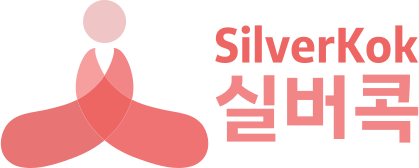

<style>
@import url('/m/app.css');

  main{min-height:100vh;display:flex;align-items:center;justify-content:center;background:#fff}
  main>div{display:flex;flex-direction:column;align-items:center;gap:18px}
  main img{width:160px;opacity:0;transform:translateY(10px) scale(.98);animation:logo 2.2s ease forwards}
  #login_start{opacity:0;transform:translateY(8px);animation:btn .5s ease forwards;animation-delay:2.2s;padding:14px 18px;border-radius:12px;border:0;background:#111;color:#fff;font-size:16px;font-weight:800;cursor:pointer}
  #login_start:active{transform:translateY(9px)}
  @keyframes logo{to{opacity:1;transform:none}}
  @keyframes btn{to{opacity:1;transform:none}}
  @media(prefers-reduced-motion:reduce){main img,#login_start{animation:none;opacity:1;transform:none}}
</style>
<main>
  <div>
    
    <button id="login_start" type="button">실버콕 시작하기</button>
  </div>
</main>